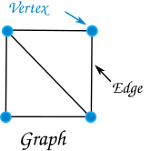
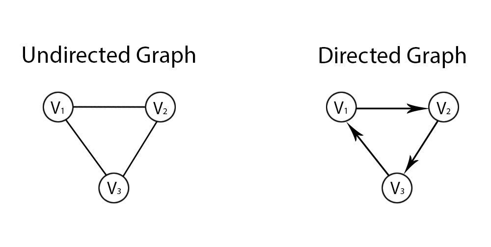
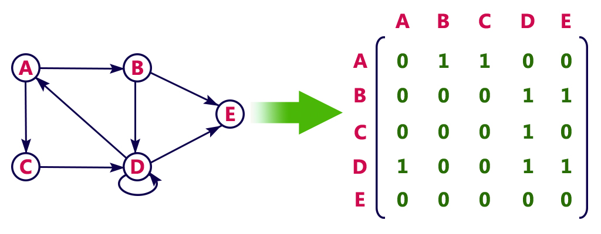
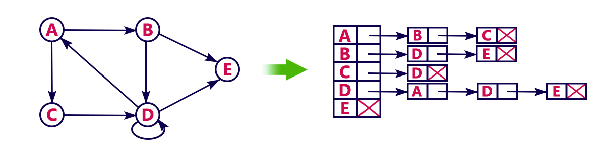

Graph. Source: mathsisfun.com
Graphs
A graph consists of a set of vertices and a set of vertex pairs called edges. Graphs can represent many types of data such as road maps, friendships, or course prerequisites.Terminology

Source: e-education.psu.edu/geog597i_02
- In an undirected graph, edges are unordered, so if the graph contains edge (x, y) then it also contains (y, x). In a directed graph, edges are ordered, so the graph may contain edge (x, y) but not (y, x). For example, a "shook-hands-with" graph is undirected, but a "heard-of" graph is directed.
- We say that two vertices are adjacent if they are connected by an edge.
- We say an edge is incident to a vertex if the vertex is one of its endpoints.
- The degree of a vertex is the number of edges incident to it.
- A path is a sequence of vertices connected by edges.
- Vertex y is reachable from vertex x if there is a path from x to y.
- The length of a path is its number of edges.
- A cycle is a path of at least 1 edge that starts and ends at the same vertex.
- A graph is acyclic if it has no cycles.
- A weighted graph has a numeric weight associated with each edge.
Graph representation

Adjacency matrix. Source: btechsmartclass.com

Array of adjacency lists. Source: btechsmartclass.com
- An adjacency matrix: a 2D boolean array where adj[i][j] = 1 if there is an edge from i to j, or false if there is not an edge.
- An array of adjacency lists, where adj[i] is a list of edges coming out of vertex i.
Comparison
Space: If a graph has V vertices and E edges, an adjacency matrix uses O(V2) space, and an array of adjacency lists uses O(V+E) space. Note that E can be as large as V2. An array of adjacency lists uses less space if there are not a lot of edges.
Runtime: Adjacency lists make it harder to check if a given edge is in the graph, because you have to iterate through the list. This is usually not a problem because in many graph algorithms we look at all outgoing edges of a vertex, not just one. Sample code
UndirectedGraph (adjacency lists representation)